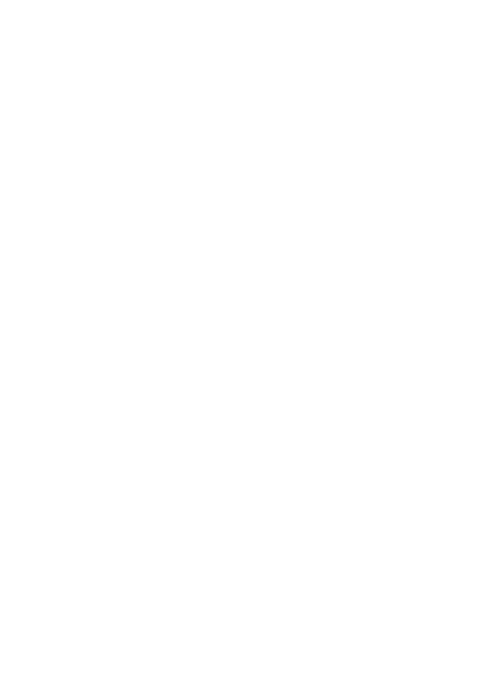

GENERAL BEEKEEPING
What to do when you are Queenless
This article was originally published in May 2013*, but this issue comes up like clockwork every year…
(*If any one knows who the original author of this article is, please contact us so we can publish the
appropriate credit)
You think your hive is queenless - you can't spot the queen, and you don't see any
eggs. What now?
First, don't panic - unless you have been pretty negligent in your inspections you have plenty of time to
address this issue without any real negative effects on the hive. There is at least a 3-1 chance that your hive
is not actually queenless, and even if it is you can get it queenright all by yourself if you have at least one
other hive.
Give the “queenless” hive a frame from another hive that has at least a few eggs or very young brood on it -
aren't you glad you have more than one hive? Mark that frame (a child's crayon works great for this) and
make a note of what you have done and the date. If the hive really is queenless, then it will start queen cells
on that frame of brood right away, and they will be easy for even a novice to spot within 3-5 days. The only
real exception is that a hive which has been actually queenless for more than about 30 days may be so weak
or have so many laying workers already that they won't start queen cells. By that time though the hive will
not only be queenless but will be completely broodless and probably very weak - many of the foragers will
abandon a queenless hive. But if you do inspections at least every other week to confirm that your hives are
queenright that will never happen.
If they don't try to start queen cells on a fresh frame of brood (during Spring through Fall) then they already
have a queen - it might be a virgin queen or a recently mated queen that is not yet laying. If they do already
have a queen (of any kind) they WILL NOT accept a new queen - no matter how much you pay for it.
Just about the only ways to be sure that a hive is really and truly queenless is to do the frame-of-brood thing
or to actually remove the queen yourself. Looking for the queen doesn't do it - even an experienced queen
spotter can fail when it really matters.
Also, giving an actually queenless hive a frame of open brood will help to prevent it from developing a laying
worker, and will help to keep the population demographics healthier.
Any hive will benefit from a donated frame of brood.
There are a few reasons why a hive might appear to be queenless when it really isn't. Brood production is
cyclical - a hive can be full of brood one day and have very little only a few days later. This usually involves an
influx of nectar that leaves the queen with few places to lay eggs - at which point the hive may appear to be
without a queen. Depending on the exact circumstances this may or may not result in the hive issuing a
swarm. A hive which has swarmed may be queenless for a few days, and may be broodless for up to 3 weeks
or so while it makes a new queen - also appearing to be queenless. Or you could accidentally squish the
queen during an inspection. None of these circumstances make a hive hopelessly queenless - they all will
make a new queen most of the time without beekeeper intervention. Sometimes (10-30% of the time) some-
thing goes wrong though - If a virgin queen fails to return from mating for any reason the hive will then be
hopelessly queenless - lacking the resources to make a new queen without help from a beekeeper. While a
Geelong Beekeepers Club ∙ General Beekeeping
39